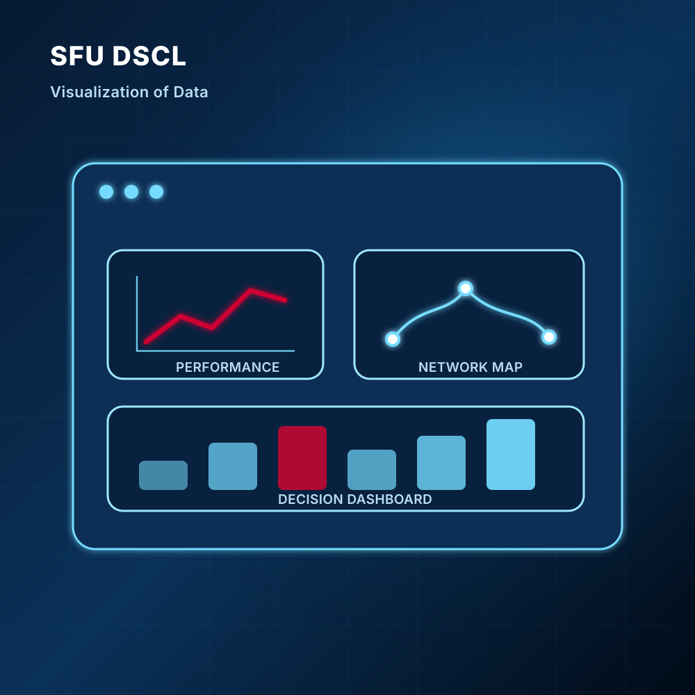

Overview
What this capability means
Supply chain data is only useful when people can understand it and act on it. DSCL helps partners transform complex data into clear visual tools that support communication, decision-making, and strategic planning.
Capability 05
Turn complex supply chain data into dashboards, maps, and decision-ready insights.

Overview
Supply chain data is only useful when people can understand it and act on it. DSCL helps partners transform complex data into clear visual tools that support communication, decision-making, and strategic planning.
What DSCL Provides
Why It Matters
Supply chains involve many actors, locations, time points, and dependencies. A spreadsheet or static report may not show how problems move through a system. Visualization helps partners understand not only what is happening, but where, when, why, and with what consequence. It also creates a shared language for government, industry, and academic partners.
Partner Opportunity
Outcome
A successful visualization project turns data into insight, insight into alignment, and alignment into action.